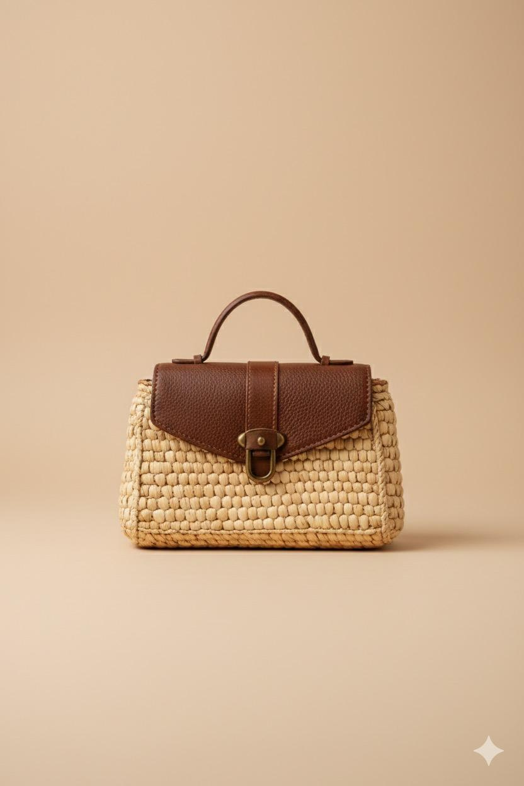
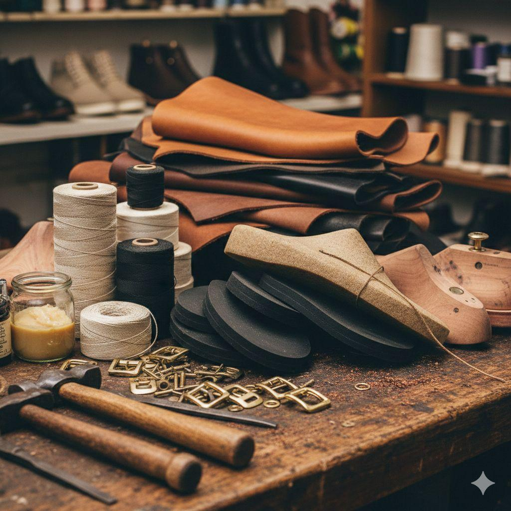

Chez WUUDÉ, chaque produit est pensé comme une pièce unique, à la croisée de l'artisanat traditionnel et du design contemporain. Nos accessoires sont fabriqués à la main par des femmes artisanes sénégalaises, à partir de matières locales, durables et recyclées.
Nos produits sont conçus dans une logique de slow fashion, privilégiant la qualité, la durabilité et l'éthique sur la production de masse.
Acheter un produit WUUDÉ, c'est faire le choix d'une consommation consciente et responsable.

Découvrez nos collections exclusives conçues avec passion et savoir-faire.

Noir

Vert

Blanc

Mauve
Des sacs uniques, pratiques et esthétiques, pensés pour accompagner le quotidien avec élégance.
Caractéristiques :
Chaque sac est produit en série limitée, garantissant son caractère exclusif.

Noir

Marron

Bleu

Gris
Des accessoires qui complètent une tenue tout en affirmant une identité forte.
Caractéristiques :

Rouge

Blanc

Beige

Noir
Des chaussures confortables et durables, conçues pour allier style, authenticité et fonctionnalité.
Caractéristiques :

Orange

Vert foncé

Beige

Bleu ciel
Pensées comme des pièces complémentaires, les ensembles béret + ceinture incarnent l'identité forte de WUUDÉ. Ils permettent de composer un style harmonieux tout en mettant en valeur les matières et motifs traditionnels.
Chaque ensemble est :

Sac WUUDÉ – Édition Raphia Naturel
Ce sac est entièrement confectionné à la main à partir de raphia naturel, tissé selon des techniques artisanales traditionnelles. Il allie légèreté, résistance et esthétique, faisant de lui un accessoire à la fois pratique et intemporel.

WUUDÉ accorde une attention particulière à la sélection des matières premières utilisées dans ses créations.
Matières principales :
Ces matières permettent de réduire l'impact environnemental tout en valorisant les ressources locales.
Découvrez nos collections uniques et participez à l'aventure